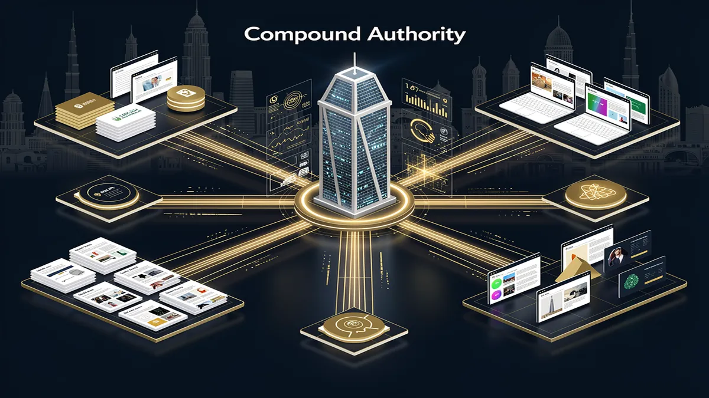
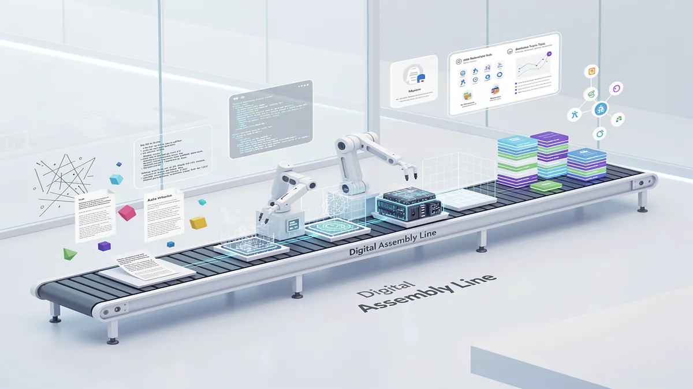
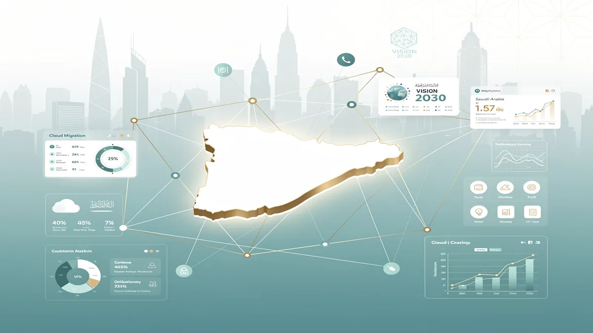
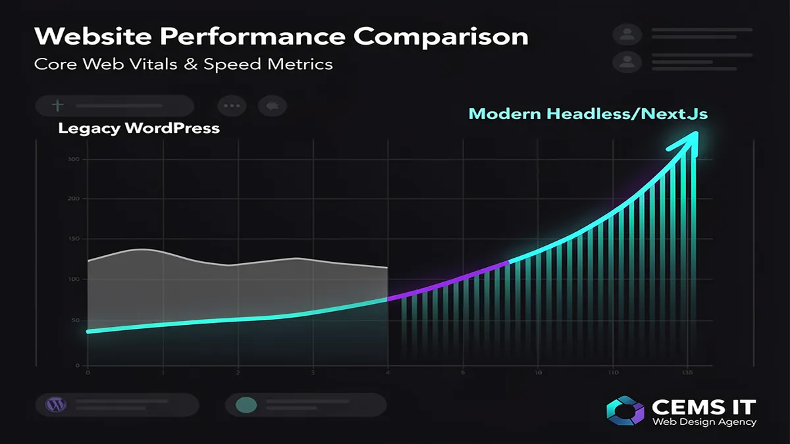
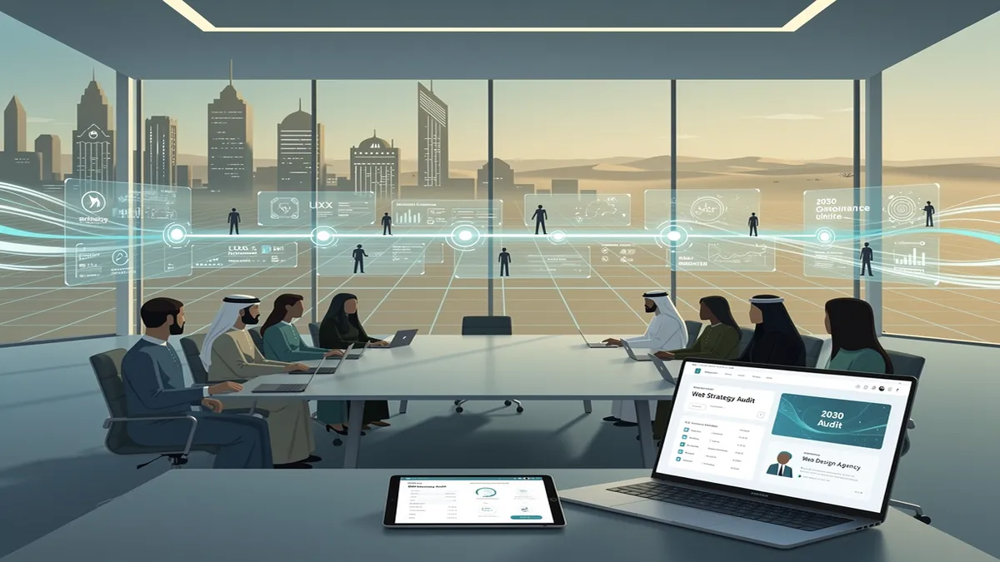

The Compound Authority Framework: Why Your Web Design Must Be a Growth Engine
Your website in 2026 is no longer a digital brochure; it is the central nervous system of your Web Design Agency strategy in Riyadh. In a market defined by the Vision 2030 digital transformation, Saudi businesses can no longer afford isolated pages that sit dormant. The “Compound Authority Framework” shifts your digital presence from a collection of silos into an interconnected growth engine that signals deep expertise to both high-intent human users and AI-driven search engines.
The problem with traditional web development in KSA is the “launch and forget” trap. Static sites fail to meet the rigorous demands of Core Web Vitals Saudi Arabia, resulting in poor visibility and high bounce rates among mobile-first users. When your digital assets lack a cohesive structure, you lose the opportunity to build topical authority, making your brand invisible to AI assistants like ChatGPT or Perplexity that now synthesize answers based on domain-level credibility.
The promise of Compound Authority is a site that gains value over time. By integrating SEO Optimization directly into the architectural phase, we ensure that every piece of content—from E-commerce Development modules to Mobile App Development landing pages—works to reinforce your primary business signals. This framework prioritizes Arabic RTL optimization and seamless UX, ensuring that your enterprise digital systems are culturally aligned and technically superior to competitors relying on legacy, non-responsive builds.
Our solution involves deploying high-performance Responsive Web Design built on modern stacks like Headless CMS or Next.js, rather than standard, slow-loading templates. This approach allows for rapid Cloud Migration and the integration of AI-powered Solutions that personalize the user journey. By layering Digital Marketing Services and Social Media Management onto a technically sound foundation, we create a feedback loop where traffic increases authority, and authority lowers your customer acquisition cost.
As a premier provider of Technology Consulting and Graphic Design Services, CEMS IT Official Website engineers these systems to be future-proof. Whether you require complex Enterprise digital systems or a high-converting retail platform, our framework ensures your investment scales alongside the Kingdom’s rapidly evolving digital economy. Stop treating your website as a cost center and start positioning it as your most aggressive sales asset.
Beyond Aesthetics: Scaling Your Digital Presence with Systemic Design

In the competitive digital landscape of Web Design Riyadh, the difference between a static site and a high-growth asset lies in the “Compound Authority” framework. Many Saudi enterprises hit an invisible ceiling when their digital presence relies on manual updates and isolated keyword targeting, leading to content decay and a loss of relevance. A professional Web Design Agency shifts the focus from individual pages to interconnected topical clusters, ensuring your platform signals 2026-ready expertise to both users and AI-driven search crawlers.
The primary obstacle for scaling businesses in the Kingdom is the reliance on legacy, fragmented workflows. When a website is built as a collection of “brochureware” rather than a living system, it fails to adapt to the rapid shifts in Saudi consumer behavior or the technical requirements of Vision 2030 digital transformation. This manual approach creates a bottleneck where marketing teams struggle to maintain SEO Optimization across bilingual (Arabic/English) interfaces, leading to inconsistent user experiences and plummeting Core Web Vitals Saudi Arabia scores.
To break this ceiling, CEMS IT Official Website implements systemic design that automates authority. By integrating AI-powered Solutions directly into the architecture, we build environments that handle metadata, schema layering, and internal linking dynamically. This ensures that as your business grows—whether through E-commerce Development or expanding your Mobile App Development ecosystem—your digital presence remains a cohesive growth engine rather than a maintenance burden.
Modern systemic design provides measurable advantages for Riyadh-based enterprises:
- Topical Cluster Automation: Move beyond single keywords to own entire industry subjects, signaling deep expertise to search engines through structured data and Headless CMS vs WordPress KSA logic.
- Arabic RTL Optimization: Ensure seamless Right-to-Left performance that respects local cultural nuances without breaking the technical integrity of your Responsive Web Design.
- Enterprise Scalability: Utilize Cloud Migration and Technology Consulting to ensure your backend can handle high-traffic surges during national events or seasonal retail peaks.
- Integrated Growth Loops: Connect your Social Media Management and Digital Marketing Services directly into a conversion-optimized funnel that turns passive traffic into qualified leads.
By prioritizing a systemic approach, businesses in Riyadh can bypass the limitations of standard Graphic Design Services. Instead of just looking professional, your platform functions as a high-performance tool tailored for the local market. This transition from “having a website” to “owning a digital system” is what allows brands to dominate search results and maintain a competitive edge in the Kingdom’s evolving economy. For technical standards on performance, we align our builds with web.dev to ensure every deployment meets global speed and accessibility benchmarks.
Bilingual Excellence: Navigating RTL (Arabic) UX/UI for Vision 2030 Success

To dominate the Riyadh market, your digital presence must move beyond simple translation toward a sophisticated “Compound Authority” model where UI/UX Design and technical infrastructure are inextricably linked. Partnering with a premier Web Design Agency ensures your platform isn’t just a mirrored template but a high-performance engine aligned with the Vision 2030 digital transformation. If you are ready to elevate your brand’s digital maturity, our team is prepared to audit your current RTL architecture for maximum impact.
In the Saudi landscape, achieving bilingual excellence requires navigating the complex logic of Right-to-Left (RTL) optimization. This isn’t merely a visual flip; it is a structural overhaul. For instance, while layout elements like navigation menus and sidebars must mirror, certain components like phone numbers and media playback controls must remain Left-to-Right (LTR) to maintain usability. Failing to address these nuances signals a lack of cultural competence, which can alienate high-value local stakeholders and government-linked entities.
Steps to Master RTL Mirroring and Performance
- Logical CSS Implementation: We replace physical properties (like
margin-left) with logical properties (margin-inline-start) to ensure seamless transitions between Arabic and English. This reduces technical debt and prepares your site for Enterprise digital systems. - Typography and Readability: Utilizing high-performance fonts like Noto Sans Arabic ensures legibility across all devices. We optimize line heights and letter spacing to accommodate the script’s unique verticality, directly improving Core Web Vitals Saudi Arabia scores.
- Performance Engineering: We leverage Cloud Migration and localized CDN edge nodes to ensure lightning-fast load times on local Saudi networks (STC, Mobily, Zain), which is critical for Mobile App Development and E-commerce Development.
- Strategic Integration: By blending Graphic Design Services with Technology Consulting, we ensure every visual element supports your overarching Digital Marketing Services and Social Media Management goals.
Examples of Localized Digital Success
Consider a Riyadh-based retail giant transitioning from a legacy Headless CMS vs WordPress KSA setup. By implementing AI-powered Solutions for personalized Arabic search queries, they can see a significant lift in conversion rates. This transformation requires a Digital Marketing Agency Saudi Arabia that understands the shift from static pages to dynamic, data-driven environments.
Our approach integrates SEO Optimization at the code level, ensuring that your Arabic content ranks as effectively as your English version. Whether you are looking for Responsive Web Design for a startup or a complex Cloud Migration for a government entity, the focus remains on building trust through technical precision. By adhering to global standards like those found on web.dev, we ensure your Riyadh-based business is ready for the global stage while remaining deeply rooted in local cultural nuances.
AI-Driven Personalization and Modern Tech Stacks in Riyadh

The transition from monolithic architectures to high-performance, decoupled systems is no longer optional for any Web Design Agency in Riyadh aiming to dominate the local digital landscape. As Saudi Arabia accelerates its Vision 2030 digital transformation, the “Compound Authority” framework dictates that web platforms must evolve from simple landing pages into interconnected, high-speed data ecosystems.
The primary challenge for enterprises in KSA remains the “Legacy Bottleneck.” Traditional WordPress builds often suffer from bloated plugins and heavy CSS, which significantly degrade Core Web Vitals Saudi Arabia scores. On local networks like STC and Mobily, high latency in monolithic sites leads to immediate bounce rates. Relying on outdated stacks in a market that demands instant gratification is a recipe for commercial invisibility.
To solve this, we implement AI-powered Solutions integrated with a Headless CMS and Next.js frontend. By decoupling the backend, we ensure that content is delivered via lightning-fast APIs, while the frontend is pre-rendered using Static Site Generation (SSG). This architecture ensures that Arabic RTL optimization is handled at the component level, preventing the “layout shift” common in poorly translated themes. This modern approach, championed by specialists at CEMS IT Official Website, allows for seamless Cloud Migration and enterprise-grade security.
Our implementation process follows three critical steps to ensure 2026-readiness:
- Technology Consulting & Audit: We analyze your existing infrastructure to identify performance gaps. We prioritize Mobile App Development compatibility, ensuring your web data layer can feed into iOS and Android applications simultaneously without redundant data entry.
- Headless Integration: We replace the heavy “Head” of WordPress with a React-based Next.js framework. This allows for AI-Driven Personalization, where user behavior on your site triggers real-time content adjustments, a key component of modern Digital Marketing Services.
- Omnichannel Synchronization: Your website becomes a central hub. Through structured data, your content is pushed to Social Media Management tools, E-commerce Development modules, and IoT displays, ensuring a unified brand voice across Riyadh’s physical and digital touchpoints.
By focusing on SEO Optimization at the architectural level rather than as an afterthought, we guarantee that your platform meets the strict performance standards set by Google Search Central. This technical depth, combined with Graphic Design Services that respect local cultural nuances, ensures that your digital presence is both a visual masterpiece and a conversion engine. Whether you require complex Enterprise digital systems or bespoke retail solutions, moving to a headless stack is the only way to future-proof your ROI in the Saudi market.
What is the Best Approach for Web Design in Saudi Arabia?
In the high-stakes digital landscape of Riyadh, the best approach to web design transcends aesthetics; it is a strategic alignment with the Vision 2030 digital transformation. To dominate the Saudi market, businesses must shift from static pages to interconnected digital ecosystems that prioritize Arabic RTL optimization and Core Web Vitals Saudi Arabia performance standards.
Should you choose a Custom Build or a Saudi CMS like Salla or Zid? For rapid retail entry, Salla and Zid offer localized payment and logistics integrations. However, for mid-to-large enterprises, E-commerce Development via a Headless CMS vs WordPress KSA approach is superior. Custom builds provide the proprietary 2026-ready architecture needed for Enterprise digital systems, ensuring your brand isn’t throttled by the technical debt of generic templates.
How long does it take to launch a high-performance site? A professional Responsive Web Design typically requires 8 to 14 weeks. This timeline accounts for rigorous UX mapping, Graphic Design Services, and the technical implementation of AI-powered solutions for personalized user journeys. Rushing this process often results in poor mobile-first accessibility, which is critical given Saudi Arabia’s 98% internet penetration.
Why is SEO integration mandatory from day one? Developing a site without SEO Optimization is a sunk cost. High-authority designs must integrate Digital Marketing Services into the code—optimizing for local search intent and lightning-fast load speeds. Implementing Cloud Migration and localized hosting ensures your site meets the low-latency demands of Riyadh’s tech-savvy consumers.
What should be included in a Tier-1 Maintenance SLA? In Saudi Arabia, security and uptime are non-negotiable. An authoritative SLA must cover 24/7 monitoring, Mobile App Development synchronization, and proactive patches against regional cyber threats. Beyond basic support, your digital partner should provide Technology Consulting to scale your infrastructure as your data needs grow.
How does Arabic-first UX impact ROI? True authority in the KSA market requires more than just translating text. It demands a “Right-to-Left” (RTL) philosophy where navigation, visual hierarchy, and Social Media Management assets are designed for the Arabic eye first. This cultural precision directly correlates with higher conversion rates and long-term brand trust.
Future-Proof Your Brand: Building Your 2030 Digital Assembly Line

In the rapidly evolving landscape of Riyadh, a website is no longer a static digital brochure; it is the engine of your Compound Authority. As a premier Web Design Agency, we shift the focus from isolated aesthetics to an interconnected “Digital Assembly Line” that signals 2026-ready expertise to both users and search engines. In the Saudi market, where consumer behavior is mobile-first and deeply influenced by Vision 2030 digital transformation, your platform must act as a high-performance asset that compounds value over time.
True digital maturity requires moving beyond basic templates to Enterprise digital systems. This involves a strategic blend of Responsive Web Design and deep Arabic RTL optimization to ensure seamless UX for the local KSA audience. By prioritizing Core Web Vitals Saudi Arabia, we ensure your site meets the strict performance standards required to dominate local search results. Whether you are weighing the flexibility of a Headless CMS vs WordPress KSA, our Technology Consulting ensures your architecture supports long-term scalability.
Our framework integrates essential Digital Marketing Services directly into the build. From SEO Optimization and Social Media Management to AI-powered Solutions and Cloud Migration, every element is designed to convert high-intent traffic. For retail leaders, our E-commerce Development focuses on ROI-driven flows, while our Mobile App Development and Graphic Design Services maintain brand consistency across every touchpoint.
Investing in architecture over mere “looks” is the only way to future-proof your brand. At CEMS IT Official Website, we specialize in building these robust digital ecosystems that align with national progress. Instead of settling for a generic site, choose a partner that understands the technical depth required for sustainable growth in the Kingdom. A comprehensive strategy audit can reveal how to transform your current presence into a dominant market force.